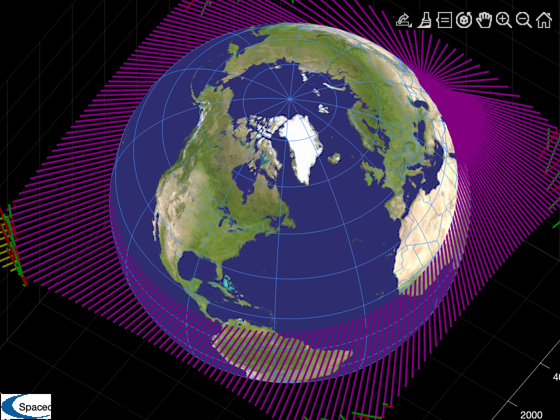

Point at an earth target and spin about the pointing vector.
Performs an animation around the earth.
See also ECIToEF, LatLonAltToEF, RVOrbGen, Period, LoadEarthMap, XLabelS, YLabelS, ZLabelS, AU2Q, Mat2Q, QForm, QMult, QPose, U2Q, Date2JD, JD2T, Unit -------------------------------------------------------------------------
------------------------------------------------------------------------- Copyright (c) 2012 Princeton Satellite Systems, Inc. All rights reserved. ------------------------------------------------------------------------- Since version 10. -------------------------------------------------------------------------
% Spacecraft %----------- omega = 2*pi/40; uSpin = [0;0;-1]; % Taywarah, Afghanistan %---------------------- lat = 33.51987810*pi/180; lon = 64.41708930*pi/180; alt = 2.2; % km rTargetEF = LatLonAltToEF([lat;lon;alt]); % Julian date for sim start %-------------------------- jD0 = Date2JD([2015 5 3 0 0 0]); % Spacecraft orbit %----------------- el = [10000 0 0 0 0 0]; p = Period(el(1)); n = 200; t = linspace(1,2*p,n); r = RVOrbGen(el,t); % Find the target vector in the ECI frame %---------------------------------------- jD = jD0 + t/86400; rTargetECI = zeros(3,n); g = cell(n); for k = 1:n g{k} = ECIToEF( JD2T(jD(k)) ); rTargetECI(:,k) = g{k}'*rTargetEF - r(:,k); end % Angle about spin axis %---------------------- angle = omega*t; qBodyToRotated = AU2Q( angle, uSpin ); qECIToBody = U2Q( Unit(rTargetECI), uSpin ); qECIToBody = QMult( qECIToBody, qBodyToRotated ); % Animate the body axes %---------------------- h = LoadEarthMap; xL = get(gca,'xlim'); yL = get(gca,'ylim'); zL = get(gca,'zlim'); axis on set(gca,'color','k','xcolor','w','ycolor','w','zcolor','w','xlim', xL, 'ylim', yL, 'zlim', zL) grid on XLabelS('x') YLabelS('y') ZLabelS('z'); hX = 0; for k = 1:n if( hX > 0 ) delete(hX); delete(hY); delete(hZ); delete(hL); end rEF = (g{k}*r(:,k))'; x = [0 0 0;1400 0 0]; y = [0 0 0;0 1400 0]; z = [0 0 0;0 0 1400]; qEFToECI = Mat2Q( g{k}' ); qBodyToEF = QPose( QMult( qEFToECI, qECIToBody(:,k) ) ); x = QForm( qBodyToEF, x' )'; y = QForm( qBodyToEF, y' )'; z = QForm( qBodyToEF, z' )'; x = x + [rEF;rEF]; y = y + [rEF;rEF]; z = z + [rEF;rEF]; l = [rTargetEF';rEF]; hL = patch('vertices',l,'faces',[1 2],'edgecolor',[0.5 0.0 0.5],'linewidth',2); hX = patch('vertices',x,'faces',[1 2],'edgecolor',[0.5 0.0 0.0],'linewidth',2); hY = patch('vertices',y,'faces',[1 2],'edgecolor',[0.0 0.5 0.0],'linewidth',2); hZ = patch('vertices',z,'faces',[1 2],'edgecolor',[0.5 0.5 0.0],'linewidth',2); pause(0.1) end %-------------------------------------- % $Id: 55f0d35a3552cebdb24c68b3b38ad216ef6ed445 $